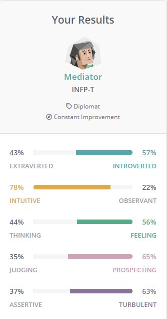

Brandon Ferguson
Portfolio
Personal Information
Student Number: s3876709
Student E-mail: s3876709@student.rmit.edu.au
Mobile: +614 07 998 573
Website: https://flavaferg.github.io/
I was born in Geelong and have been living here to this date. I am however an Australian with a quarter Irish and a quarter Scottish. I completed year 12 VCE in 2016 and have since done a Certificate III in Retail Services. I used to work at McDonalds from 2014-2019 as the role of a Crew Member where I did all round tasks from out front serving customers, out back in the kitchen and Maintenance duties. The only language I know how to speak fluently is English. I like to play the guitar and have been playing since Grade 4, in that amount of time you would think id be a pro at it but I am far from it. I also like to read books on my kindle, my favorite author is Dr. Hunter S. Thompson. I also like to play video games such as Rust, Garry’s mod & Old School Runescape on PC and Grand Theft Auto & Apex Legends on Xbox
Interest in IT
I have always had an interest in IT ever since I was a child, I started with playing Space Cadet 3D Pinball on Windows XP to playing Crash Bandicoot: The Wrath of Cortex on my brand new PS2 that I got for Christmas and my interest for IT and gaming in particular sprouted and grew from there as I moved to multiplayer games and creating my own private servers for games such as Travian, Habbo Hotel, and Rust which I would usually use someone else’s public script and upload it to a server or had a large amount of help from people I knew from the gaming community, and I would also do the same thing when creating forums for these private servers I would use the MyBB script and upload it to a website with FileZilla. It has always interested me how all these different types of Hardware put together can create something so powerful that is used so diversely. The programming side to things has kept me up at night sometimes thinking how on earth could the programs I am using be created with just 1’s and 0’s that form instructions. My uncle has IT as a major part of his life and is very knowledgeable in the IT industry which gaining knowledge from him and knowing about what he does has helped me gathering an understanding of IT and knowing if I ever need to know something he is probably the first person to go to if I cant find my answer online.
I chose to come to RMIT because I know that it is a very reputable university that I know will give me a broad understanding of IT and help me along the way to gaining my Bachelors Degree in IT. Also the ability to study from home is very good for me cause I am an introvert or and Introverted Extrovert at the least. As I like to stay at home and if I do go out I stick to my close inner circle and family. So as I have all the time on my hands I can focus on Studying without having to leave my comfort zone.
Hopefully during this course I will be able to gain and maintain a broader understanding of all parts of IT including the industry, what IT is all about, how to program, knowing what all the components in a computer and other electronic devices, such as modems, routers and robots do to get them to function . I feel as the way the world is going were heading and are probably already in the Digital Age where everyone is connected in one way or another to IT. So getting in now would be a big benefit to me in the future and help me get a job in the industry once I complete or while I am doing my Degree.
Ideal Job
https://www.seek.com.au/job/50541005
Job Ad PDF
This job position includes developing games for clients of the company using multiple game engines such as Amazon Lumberyard, Unreal Engine and Unity where I will be able to make the clients game ideas come to life. This appeals to me because I will be able to help those who have an idea about a game and have the Design become a fully functioning game, and with the possibility of being able to say “Hey I made or helped make that game” especially if it becomes a very successful game. And also the option to work in at a studio in California and even San Francisco would be nice as I’ve always wanted to visit America, especially California.
In this position some of the skills and requirements I would need to have is a minimum of 3 Years of experience using Game engine’s particularly Unreal Engine, Lumberyard and Unity, and experience creating Unreal Engine 4 content plugins, creating Unity native plugins and experience using source control such as git. I must also show that I have the experience with evidence of past projects and even jobs where I used these Game Engines frequently. I must have experience programming such languages as C++, C# and JavaScript, while having strong fundamentals of programming and complex problem solving skills and many other forms of skills in programming, such as Multi-threaded and Shader programming with strong knowledge of the design and patterns which are object-oriented, being able to work in AAA environments having published at least one Published AAA game, with good teamwork skills and being able to work in a swift-footed environment and to top it off I need have a great deal of passion for game development. Right now I do not have any of the skills, qualifications or experience needed to be eligible for this job, other than a passion for game development.
Once I complete or while I am doing my Bachelors Degree in Information Technology I aim to get a job in the game development industry that can help me gain these skills alongside doing the degree and even going into further studies that will help me build the skills that I need for this job.
Personal Profile
Myers Brigs Test

Learning Styles Test

Big 5 Test

The results of these tests show that I can be quiet and somewhat shy but I am also dedicated and hard working and can be quite creative especially when it comes to doing the work as it can be hard for me to focus and learn by listening and reading rather than doing and putting in the physical work. It also shows that I work better and connect better with smaller groups rather than large groups. I think this will influence my behavior with the team in the sense that I will knuckle down, go with the flow and that I am better at following orders rather than dishing them out which will make me good at letting the work im being asked to do be the work that I do rather than arguing about it unless I can think of a better way to do it and not dictate it but put it in as a suggestion and see whether my team is okay with me doing something different. In taking this into account with forming a team I will mainly need a leader who is good at delegating work between the group which I will make sure I get it done and knowing I will be compatible with almost any other team member than I might come across and will be very flexible with who I work with.
Project Idea
This project is called Frame Factory, which in a sense is a frame finder where you can look through our website and find every single frame from any TV show or movie that you like. Some people might not have the files of a video where they would usually use a Video to JPEG converter, so we do that process for you and convert all the TV shows and movies into JPEG format frame by frame and store it on our website for you. You can search the frame you want by episode and even find the most common frames with our sorting functionalities.
This project will be useful in a wide variety of ways, the main use for it will be that it is a great resource for meme creators who would like to make a meme based on a TV show or Movie, There are a lot of TV and movie based memes, so say people wanting to create a meme focused on the Simpsons, they will be able to come to our site, select what episode they would want to see all the Frames of and select their desired Frame to work with on their meme. This will also be a good place for fans to download frames of their favorite shows and movies and use the Frame they want as a background for their desktop or wallpaper for their phone.
With the Frame Factory product you will have access to all frames from various TV shows and movies, the directories will be be separated in categories of All TV Shows which will have a list of all available TV shows where users can direct themselves by selecting the TV show they want and then they select the season and episode of the frame they are looking for in this directory, alternatively they can search with the format eg. “The Simpsons S08E23” or “The Simpsons Homers Enemy” or just “Homers Enemy” by using the search bar on top of the page. All Movies is another category which the user can search their desired movie in the same sense of searching with the TV shows but instead of the TV show they enter to movie title or look at the list of Movies in the All Movies Categories. By default both these categories are sorted in alphabetical order (A-Z) but the user can change the way they sort through the directories from A-Z, Z-A, Most Viewed, Most Liked, Most Commented, Most Shared, Most Favorited and Most Recent or Oldest. There will also be a top 10 Episodes which will have the top 10 Episodes not by frame, which will be calculated by most Commented, Liked, Shared, Favorited and viewed frames within each episode. A Top 10 Movies which will be calculated my most Commented, liked, shared, Favorited and viewed frames combined within each movie. A Top 100 Frames Category which will have the top 100 Frames in order from 1-100 based on how many Comments, Likes, Views, Favourites and Shares that each frame from any TV Show or Movie. A Top 100 TV Show Frames category which will have the top 100 frames from any TV Show that is in our directories, calculated by combining the most Views, Likes, Shares, Favourites and Comments on each particular frame. Another category will be the Most recent category which will Show each episode and movie in order based on their release date. Once you have gone through the frames and found the one you want, you have the options to like, comment and share it, But most importantly you will be given the option to download the JPEG straight to your computer for further editing or use. We also have a functionality where you can save your favorite frames to a section called ‘Favorites’ by signing up with an account on the website and clicking on an ‘Add to Favorites’ button that will be alongside the like, comment, and share options on any of the frames that you have selected. This will allow users to keep track of their favorite frames and can easily go back to the frame that they added to favorites by going to the My Favorites section of the website. While ‘My Favorites’ is a good way to go back to frames you liked most, we also have a ‘History’ Section which will allow users to see any frame they have clicked on in the past. And also a request section where users can request any movies or TV shows we haven’t supplied on the site.
For this project we will need to get some webhosting with enough storage space to hold all the images from each frame being hosted on our website. Another tool we will need is a Video to JPEG converter to convert all movies and TV shows to a JPEG format frame by frame and web design tool such as Dreamweaver, or even notepad++ to code the site to be how we want it, a File Transfer Protocol such as Filezilla to upload all of our code images and data to the server we are hosting the website on. Also a database Software for storing user data such as phpMyAdmin unless we want to create our own
Skills required will be some html experience to create the website design and code this can be simplified by using a web design tool such as Adobe Dreamweaver, some php skills to create the MySQL database unless we used phpMyAdmin which then you would still need some basic database knowledge to create the database from their and knowing a way to integrate the database into our website. Also some knowledge of using a File Transfer Protocol service such as FileZilla so we know how to get our files across to our website. While also knowing how to use the Video to JPEG converter to get the frames we want to upload
If this website/program is successful we will solve the issue for meme creators who cant find the frames they intended to use for their memes and saves them having to go through the full video of the TV show or movie they wanted to use and screenshot it. It will also become a go to place for anyone wanting to make a meme or desktop background inspired by any of your favorite TV shows and movies, a place for users to store their favourite frames for quick access in future use and could possibly have many other uses that we aren’t focusing on.